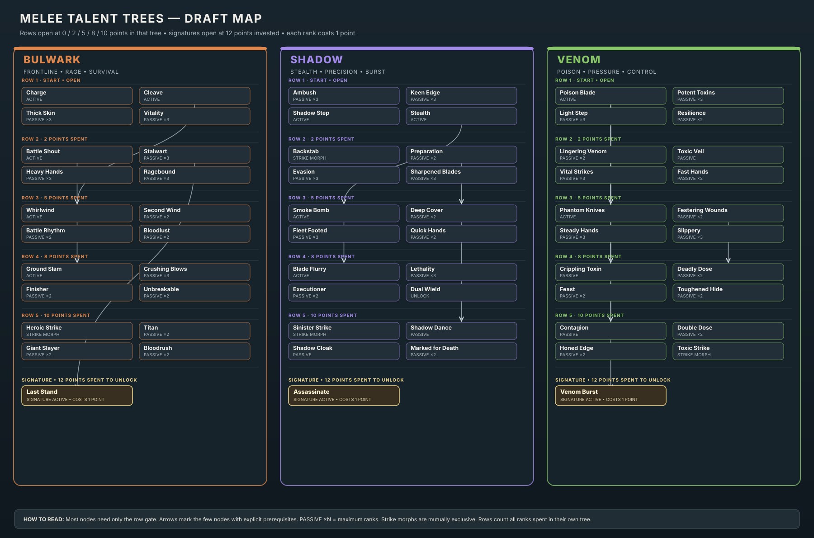
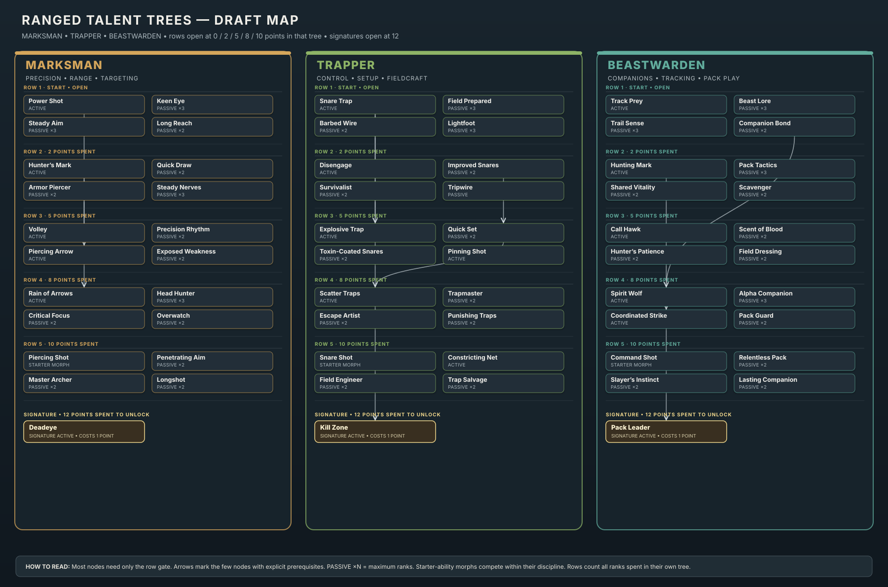
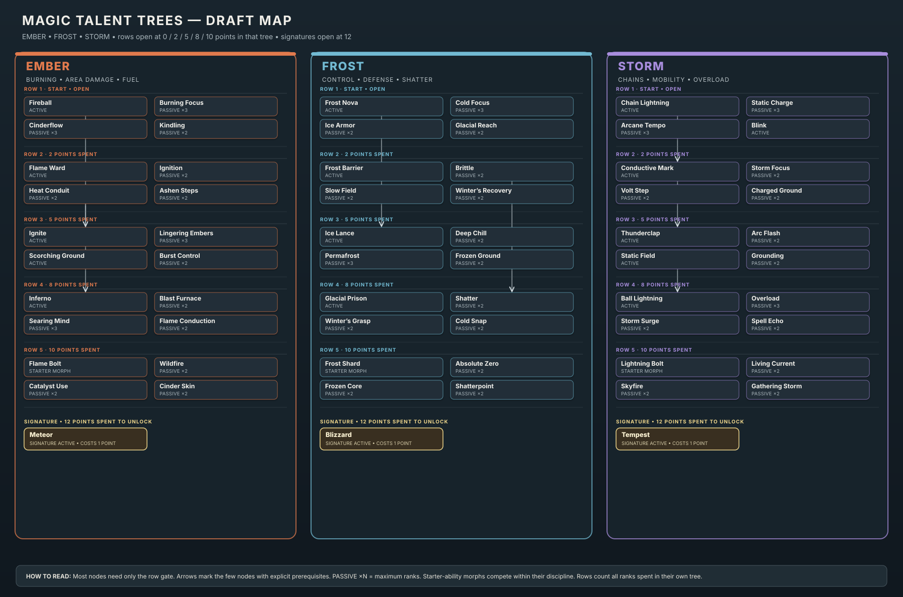

Embers • Working Design
Classless Talent Trees
Draft atlas for the nine weapon-style talent trees. Talents define a build through point investment; there is no permanent class selection. These layouts extend the existing Melee trees and propose first-pass Ranged and Magic trees.
Row gatesRows open at 0, 2, 5, 8, and 10 points spent in that tree.
Point costsEach rank costs one point. Passive nodes show their maximum ranks.
PrerequisitesMost nodes only need the row gate. Arrows show the few explicit dependencies.
SignaturesUnlock after 12 points are spent, then cost one point to learn (13 total).
Melee
Bulwark leans into frontline defense and Rage. Shadow builds stealth and precision. Venom specializes in poison pressure.

Ranged
Marksman focuses on precision and target priority. Trapper controls space with snares and field tools. Beastwarden combines tracking with companion play.

Magic
Ember brings burning area damage, Frost combines control with defense, and Storm chains damage with mobility.

Full design notes and node-by-node layouts: SKILLS_AND_TALENTS_DESIGN.md. All trees are proposals; no gameplay code has been changed.